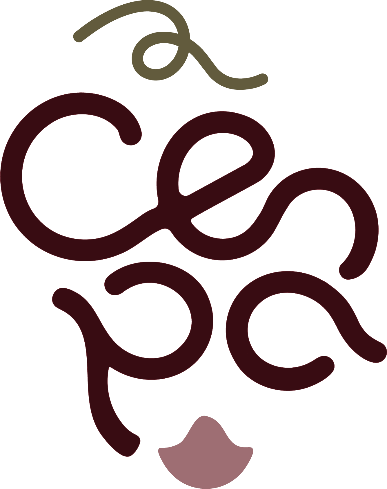
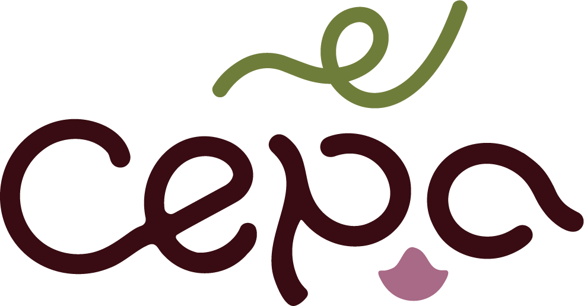
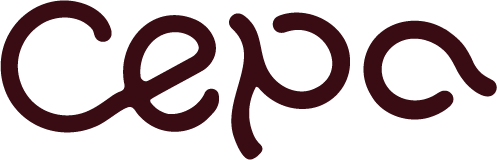
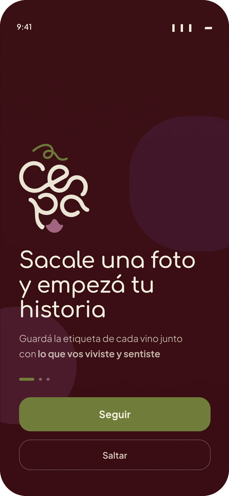
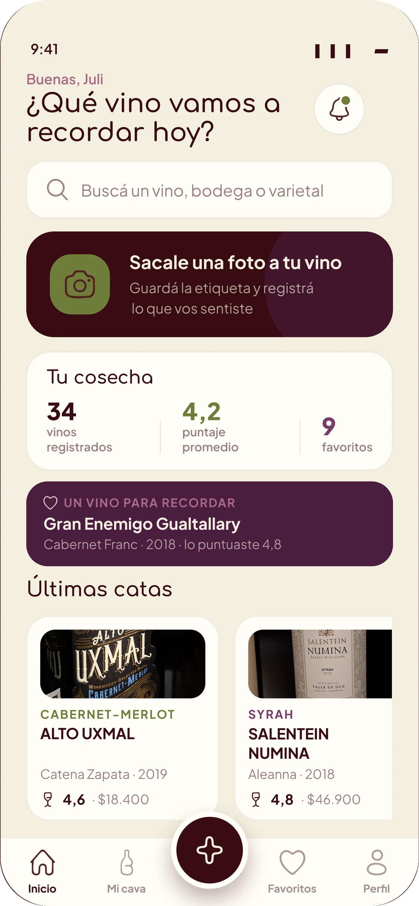
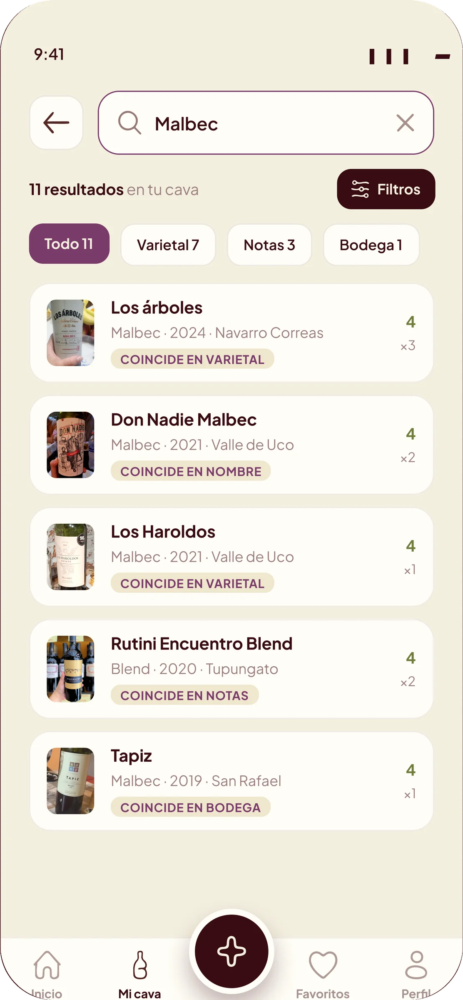
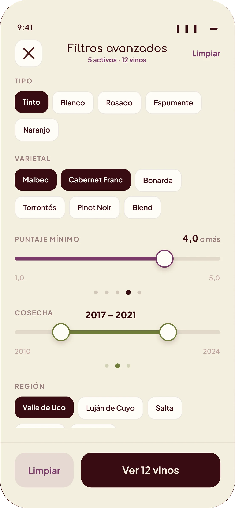

Cepa: registrar, recordar y disfrutar cada vino.
Una app para registrar y recordar catas de vino. Escaneás la etiqueta, completás la cata y armás tu cava.
Descubrir
Registrar
Recordar
Una memoria para cada cata
Cepa es una app para registrar y recordar catas de vino. La persona escanea la etiqueta, completa su experiencia de cata y organiza los vinos en su cava personal.
Diseñé el kit de marca y la experiencia de la aplicación, desde la identidad visual hasta los flujos de producto.

Versión vertical

Horizontal a color

Horizontal monocromático
Hacer simple una experiencia con mucha información
Registrar una cata completa implica reunir datos y sensaciones en un solo recorrido. Después, esa información debe ser fácil de encontrar entre muchos vinos. Y cada decisión de la app debe ayudar a que la persona confíe en lo que ocurre con sus datos.
¿Cómo hacer que registrar, organizar y volver a encontrar una cata se sienta claro y confiable?
42 pantallas y seis flujos conectados
Diseñé 42 pantallas en Figma y un prototipo de alta fidelidad para recorrer las tareas principales de la app. El prototipo incluye microinteracciones y la guía de testeo se organiza por flujo, con tareas y espacios para observaciones.
- Flujo 01
Onboarding
Primer acercamiento a la propuesta de Cepa.
- Flujo 02
Registrar un vino
Cargar los datos de un vino y completar su cata.
- Flujo 03
Escanear etiqueta
Iniciar el registro a partir de la etiqueta.
- Flujo 04
Mi Cava
Explorar la colección con búsqueda y filtros.
- Flujo 05
Favoritos
Guardar y volver a encontrar vinos favoritos.
- Flujo 06
Perfil y datos
Acceder al perfil, exportar información o dar de baja la cuenta.




Validado con usuarios reales
Preparé una guía de testeo con tareas para los seis flujos y espacios para registrar observaciones durante cada sesión.
Validación · El prototipo ya fue validado con usuarios reales.
Prototipo interactivo
Recorré los flujos principales de Cepa en Figma. También existe una versión funcional para Android que podés instalar en tu celular.
Abrir prototipo en FigmaUna experiencia completa, validada con usuarios.
El entregable reúne el kit de marca, 42 pantallas en Figma, un prototipo de alta fidelidad con seis flujos y una guía de testeo. El prototipo ya fue validado con usuarios reales.
← Volver a todos los proyectos